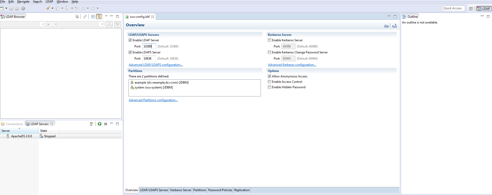
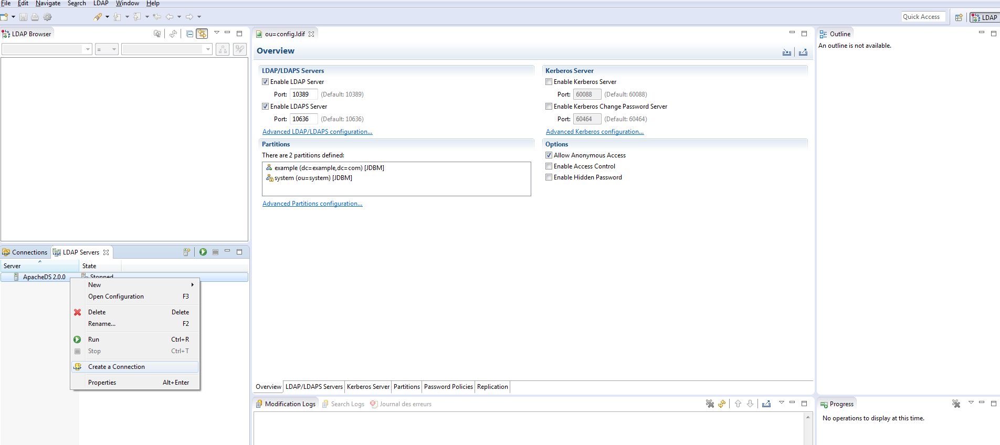
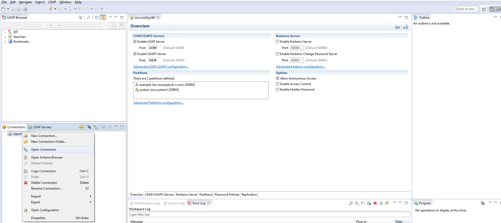
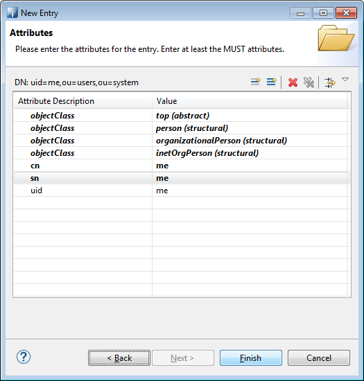
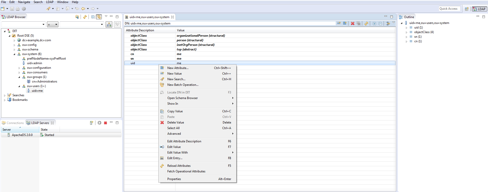

SAML Authentication with WSO2 / LDAP / PASSPORT / EXPRESS
Authentication with standard protocols is often a daunting task for most people. SAML, OAuth2, etc. seem cumbersome and too difficult to integrate in an application. What's more, their roles and limits are fuzzy to a lot of developpers. Let's try to demystify this natural functionnality in any web application. In this tutorial, we'll use SAML2 with WSO2 Identity Server connected to a LDAP server as a users store. The application will be implemented with Express / Passport.
Prerequisites
So, Apache Directory Studio will be our LDAP server, but of course you should be able to use any other LDAP Server in your own environment. WSO2 is well documented and easy to manage, it will take the role of our Identity Server. And C9 is my little sweet IDE for any Javascript development, I recommend it but you can use any other one convenient to you. Do I need to present Node ?
Configuration
After installation of all requirements, let's begin to configure our environment.LDAP Server creation
Launch Apache Studio and then create a LDAP Server. In the "LDAP Servers" tab, click on "New Server" button.Then, check the ports of your newly created LDAP Server by double clicking the new server.
Now, proceed to create a connection to your LDAP Server as shown below
You should get a confirmation message

Open it by double-clicking it in the "connection" tab or by contextual menu

User & Group creation
Users and roles can be created directly in WSO2, but for demonstration sake let's create them in the LDAP. If you want to automatize users and roles creation or import, you'll need this section. First, create a user in the LDAP under ou=users,ou=system. Follow the assistant as described
Follow the assistant as described

Give it a inetOrgPerson class, automatically a few others classes will be added

Then choose a name as its uid. Here, very cleverly I choose "me" as the best name describing ... me.

A sn and cn are needed to confom to the LDAP Schema. Add them in the assistant before trying to create it
No authentication without password, add it as a new attribute by these two steps by right-click then "New Attribute"
Then

Choose a good and secured password. And more securely, choose a salted algo like SSHA

Now, create a group for our user as follows. First, create a new entry under ou=groups,ou=system with "groupOfNames" class. Let's call it "basic"


Then add "me" user as a member after clicking next

WSO2 configuration
WSO2 runs an embedded LDAP Server we must disable and replace by our own one.To that purpose, under %WSO2_HOME/repository/conf/identity/embedded-ldap.xml, turn it off
false
...
Now, let's indicates how to connect to our LDAP Server, change the following section from %WSO2_HOME/repository/conf/user-mgt.xml according your environment.
org.wso2.carbon.user.core.tenant.CommonHybridLDAPTenantManager
ldap://localhost:${Ports.EmbeddedLDAP.LDAPServerPort}
admin
ou=Users,dc=wso2,dc=org
identityPerson
uid
(&(objectClass=person)(uid=?))
(objectClass=person)
.....
ou=Groups,dc=wso2,dc=org
.....
true
.....
WSO2.ORG
...
In our case, we'll change them to
ldap://localhost:${Ports.EmbeddedLDAP.LDAPServerPort}
secret
ou=users,ou=system
inetOrgPerson
...
ou=groups,ou=system
...
false
...
mycompany.org
This section needs some explanations.
- I didn't change the port configuration as the expression in ConnectionURL property resolves to 10389 (have a look at %WSO2_HOME/repository/conf/carbon.xml to Server/Ports/EmbeddedLDAP/LDAPServerPort element to get the value). You remember we checked the port value of our LDAP Server and it was indeed 10389. So no need to change it. Of course, in our example we'll address a local server but in your production environment you'll have to name it instead of localhost.
- The default password of the admin user of ApacheDirectoryStudio is secret so change it in ConnectionPassword property.
- The base of our user entries is ou=users,ou=system in our LDAP Server so be the value of UserSearchBase property.
- Our class of users was inetOrgPerson not identityPerson.Accord UserEntryObjectClass to this value.
- The group entries base is located elsewhere than the default configuration. Switch GroupSearchBase to ou=groups,ou=system for the same reason as the users entries.
- Turn SCIM off, we don't need it here.
- Of course name your realm according your topology, here I chose mycompany.org as defaultRealmName.
Launch the WSO2 IS server by %WSO2_HOME/bin/wso2server.bat start. Don't forget to set JAVA_HOME before that.